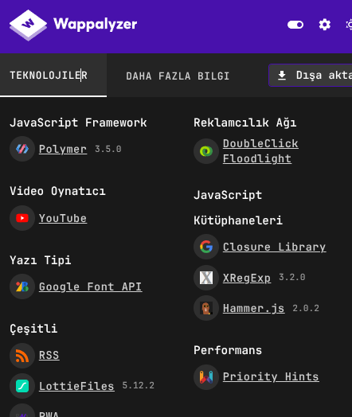

Metodoloji
*Bir Sızma Testinde İzlenen standart yol;
- Bilgi Topla
- Haritalandır
- Zafiyeti Doğrula
- Sömür
- Yetki Yükselt
- Raporla
Şeklindedir, bu metodolojiyi takip etmek testlerin eksiksiz yapılmasını sağlar.
Bilgi Toplama
Hedef sistemde kullanılan teknolojiler ve bağlantılı servisler hakkında anlamlı bilgilerin toplandığı aşamadır.
Pasif Bilgi Toplama
Sistemle doğrudan bağlantı kurmadan, açık kaynaklardan ve üçüncü parti servislerden veri toplama sürecidir. Hedef, bu sorgulamalardan haberdar olmaz.
- Whois Sorgusu: Domain Kaydı hakkında kritik bilgiler getirir.
# Temel sorgu whois hamzaozt.blog # Belirli bir sunucuya sorgu whois -h whois.verisign-grs.com hamzaozt.blog # IP adresi sorgusu whois 8.8.8.8 # Kısa çıktı whois -H hamzaozt.blog # Port belirtme whois -p 43 hamzaozt.blog
- DNS sorguları:DNS sunucularındaki kayıtları kullanmaya yönelik sorgulardır.
# --- Temel kayıtlar --- dig +short hamzaozt.blog A # address kaydı dig +short hamzaozt.blog MX # mail kaydı dig +short hamzaozt.blog TXT # text kaydı dig +short hamzaozt.blog NS # name server kaydı # --- Belirli resolver --- dig @1.1.1.1 +short hamzaozt.blog MX # name server seçerek nslookup -type=TXT hamzaozt.blog 8.8.8.8 # --- Alt alan adı keşfi --- subfinder -d hamzaozt.blog amass enum -passive -d hamzaozt.blog
- Arama motorları ve Google Dork: Arama motorlarının indekslediği veriler üzerinden hassas bilgi, açık dizin veya sızdırılmış veri bulma aşamasıdır.
#Google Dork # Açık dizin listelemesi site:hamzaozt.blog intitle:"index of" # Yapılandırma / ortam dosyaları site:hamzaozt.blog ext:env OR ext:cfg OR ext:ini # Yedek ve veritabanı dosyaları site:hamzaozt.blog ext:bak OR ext:sql OR ext:old # Giriş panelleri site:hamzaozt.blog inurl:admin OR inurl:login OR inurl:wp-admin # Yayınlanmış e-posta adresleri site:hamzaozt.blog intext:"@hamzaozt.blog" # GitHub'da sızdırılmış anahtarlar site:github.com "hamzaozt.blog" "api_key" OR "password" OR "secret" # Paste sitelerinde domaine ait veri "hamzaozt.blog" site:pastebin.com
- Teknoloji Tespiti: sistemin üzerinde çalışan teknolojileri pasif şekilde tespit etme yöntemleridir.
Wappalyzer ile web uygulamasında kullanılan bazı teknolojilerin keşfi:


Aktif Bilgi Toplama
Hedef sistemle doğrudan etkileşime geçerek yapılan keşif aşamasıdır. Sistem bu sorguları loglayabilir.
- Port ve Servis Taraması:Açık Portların,Çalışan servislerin ve bu servislerin versiyonlarının tespit edilmesine yönelik taramalardır.
nmap -sS 10.10.10.10 # SYN taraması nmap -sT 10.10.10.10 # TCP connect taraması nmap -sC 10.10.10.10 # Script taraması nmap -sV 10.10.10.10 # Versiyon taraması rustscan 10.10.10.10 # rustscan ile nmap -sS -Pn -n -T5 10.10.10.10 # ctfde genel kullandığım tarama
- Dizin/Dosya Keşfi:sistemdeki dosyalar ve klasörlerin fuzzing ile tespit edilmesi ve değerlendirilmesidir.
#Endpoint keşfi için seçenekler: ffuf -u 'https://hamzaozt.blog/FUZZ' -w endpoints.txt #tercihim. gobuster dir -u 'https://hamzaozt.blog' -w endpoints.txt feroxbuster -u 'https://hamzaozt.blog' # kendi wordlistleri var
- Banner yakalama:hedefteki açık portlarla bağlantı kurunca gelen bilgilendirmeleri tespit etme aşamasıdır.
nc 10.10.10.10 21 nmap -sV 10.10.10.10 -p 21 #otomatize
- Servis Keşfi:Erişebildiğimiz portlarda çalışan servislere uygun araç ile veri toplamaya yönelik yapılan araştırmalardır.
#ftp(21) portu açıksa denenir: ftp anonymous@10.10.10.10 ftp>ls -rw-r--r-- 1 0 0 42 Oct 10 10:10 dosya.txt ftp> get dosya.txt #smb(139/445) portu açıksa bakılabilir: smbclient -L //10.10.10.10 -N Sharename Type Comment --------- ---- ------- print$ Disk Printer Drivers paylasim Disk Public Share IPC$ IPC IPC Service (Samba) #Protokoller ve servisler hakkında bilgi ve tecrübe sahibi olmak #bu aşama için oldukça önemlidir.nmap script taraması bu aşamada neler yapabileceğinize dair ipuçları gösterir.
Otomasyon
Bu bir bilgi toplama aşaması değildir! ancak birden fazla domainde/subdomainde veya endpointte verinin büyüklüğünden dolayı manuel ve tek hedefe yönelik teknikler yavaş ve verimsiz kalır, otomasyon yöntemleri ve araçları ile bu işlemleri hızlandırabiliriz.
theHarvester -d hamzaozt.blog #whois,dig gibi işlemleri topluca yapar
amass enum -active -d hamzaozt.blog # daha kapsamlı tarama
nuclei -l urls.txt -t cves # bilinen bazı zafiyetleri üstünkörü tararBüyük verilerde tarama ve atak yüzeyine odaklanma:Yüzlerce subdomain veya binlerce endpoint olduğunda "hepsine tek tek bakmak" imkansızdır. Bu yüzden amaç tümünü taramak değil, atak yüzeyini daraltıp en değerli hedeflere odaklanmaktır.
# 1) Subdomain keşfi
subfinder -d hamzaozt.blog -silent -o subs.txt
# 2) Canlı olanları filtrele
httpx -l subs.txt -silent -o live.txt
# 3) Canlı hedeflerde teknoloji/başlık/status bilgisi topla
httpx -l live.txt -title -tech-detect -status-code -o httpx_detay.txt
# 4) Canlı hedeflerden URL/endpoint topla (crawling + JS parsing)
katana -list live.txt -silent -d 3 -o urls.txt
# 5) Toplanan URL'leri parametre/dinamik olanlara göre filtrele
cat urls.txt | grep "=" | uro | tee params.txt*Bu tür bir zincir Bilgi Toplama aşamasına daha gerçekçi bir yaklaşımdır.
*Otomasyonun nasıl yapılacağını pentester odağına ve hedefine göre kendisinin belirlemesi daha verimli olur.
Haritalandırma
Bilgi Toplama aşamasında elde edilen verilerin bir araya getirerek sistemde zayıf olabilecek halkaların tespit edilip atak yüzeyinin belirlenmesi aşamasıdır
Bu aşamada kendi beğendiğiniz bir not uygulamasına yada bir kağıda sistemin yapısını anlatan servislerin ve teknolojilerin birbirleri ile bağlantılarını gösterecek şekilde çizebilir/yazabilirsiniz.

-Bunun için ben genelde Obsidian kullanırım ve tavsiye ederim.
Doğrulama
Bilgi Toplama aşamasında tespit edilen olası zafiyetler bu aşamada manuel olarak test edilir.
Zafiyetlerin gerçekten sömürülebilir olup olmadığı belirlenir, bu aşama otomatik tarama araçlarının sık sık false positive’leri ayıklamak ve zafiyetin sömürülmesini sistemin başka bir katman tarafından engellenmediğinden emin olma açısından önemlidir.
Sömürme
Yetki Yükseltme
Raporlama